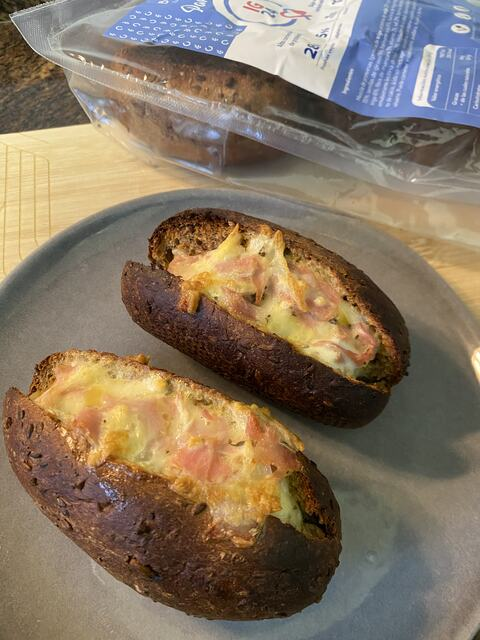

Receta · Postre · 25 min aprox.
Barquetas de Jamón y Queso
Barquetas de Jamón y Queso: una idea fácil con Panecillos proteicos Low Carb para una merienda o un postre, en unos 25 minutos. Lleva 1 huevo, jamón dulce y queso. Panecillos proteicos Low Carb aporta 29 g de proteína por cada 100 g.
5 ingredientes4 pasos25 min aprox.
 Hecha conPanecillos proteicos Low Carb350 g · 7 uds de 50 gVer producto
Hecha conPanecillos proteicos Low Carb350 g · 7 uds de 50 gVer productoIngredientes
- Panecillos IG24
- 1 huevo
- Jamón dulce
- Queso
- Orégano o albahaca (opcional)
Información nutricionalAlto en proteínas, muy bajo en hidratos de carbono
Preparación
- 01Batir el huevo con el jamón y el queso
- 02Hacer un corte en el panecillo para rellenar
- 03Rellenar el panecillo
- 04Hornear a 200°C por 15 minutos